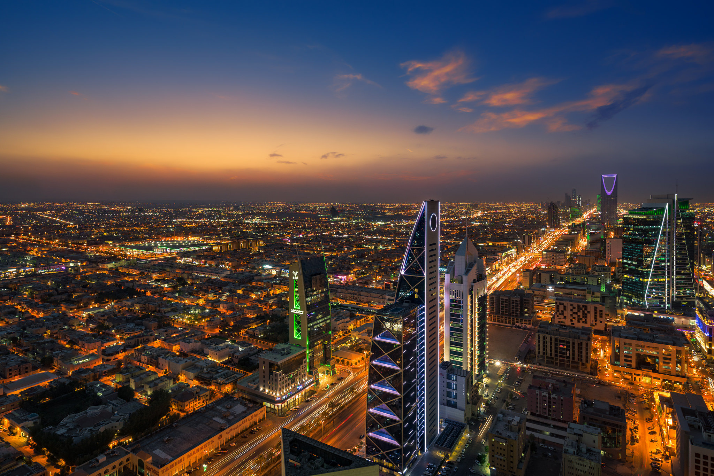

Riyadh
Attractions
Kingdom Centre Tower
One of Riyadh's iconic landmarks, this skyscraper offers panoramic views of the city from its observation deck. It also houses a shopping mall and luxury hotel.
Diriyah
Visit the historic district of Diriyah, a UNESCO World Heritage Site, known for its mud-brick architecture, ancient palaces, and cultural significance as the birthplace of the Saudi state.
Activities
Shopping
Riyadh boasts numerous shopping malls and traditional souks (markets) where you can shop for everything from luxury brands to local handicrafts and spices. Don't miss the Riyadh Gallery and Al-Batha'a Souq.
Desert Safari
Experience the Arabian desert with a desert safari tour, which often includes activities like dune bashing, camel rides, and traditional Bedouin-style dinners under the stars.
Dining
Local Cuisine
Indulge in traditional Saudi cuisine at local restaurants, where you can savor dishes like mandi (spiced rice with meat), kabsa (rice with chicken or lamb), and mutabbaq (stuffed bread).
Street Food
Indulge in street food delights such as shawarma, falafel, and grilled kebabs, offering a taste of authentic Saudi street food culture..
Transportation
Public Transportation
Riyadh has a limited public transportation system, mainly consisting of buses and a newly developed metro system, making it easier to navigate the city.
Taxi and Ride-Hailing Services
Taxis and ride-hailing apps like Uber and Careem are widely available and offer convenient transportation around the city.
Accommodation
Hotels
Riyadh offers a range of accommodation options, from luxury hotels with world-class amenities to budget-friendly options catering to different preferences and budgets.
Serviced Apartments
Consider staying in serviced apartments, which provide more space and amenities for longer stays, ideal for families or travelers seeking a home-away-from-home experience.